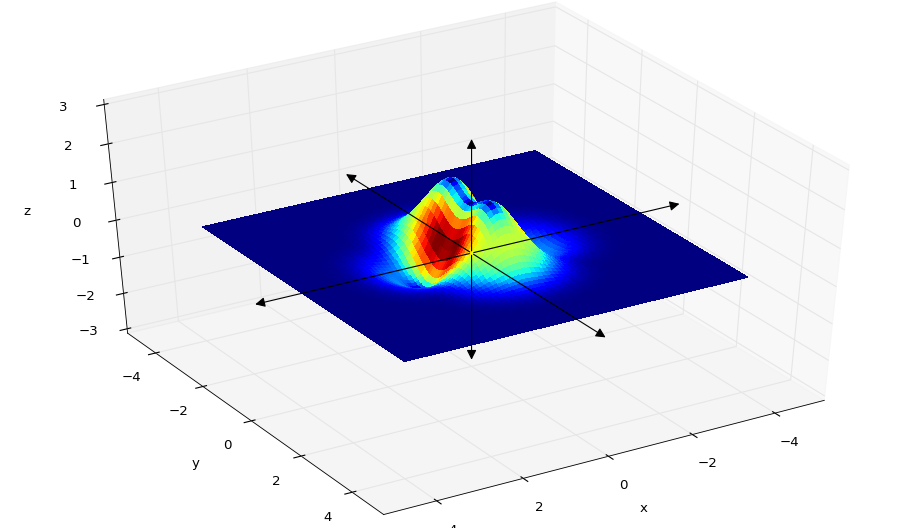
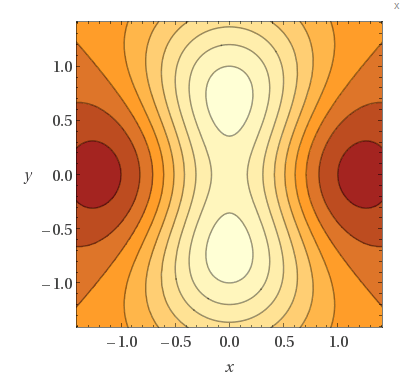

Example 1
Determine the relative extrema of
$f(x,y) = 2x^2 + y^2 + 8x - 6y + 20$
finding the critical points of $f$ first involves finding the partial derivatives of $f$ with respect to $x$ and $y$:
$f_x(x,y) = 4x + 8$
$f_y(x,y) = 2y + 6$
We can see from DEF 2 #2 (see below) that we wont be able to find a point $(x_0,y_0)$ that satisfies condition #2 because both $f_x$ and $f_y$ are defined at every point in their domains. However, we can find a point $(x_0,y_0)$ that satisfies condition #1 by setting $f_x(x,y) = 0$ and $f_y(x,y) = 0$.
Solving $4x + 8 = 0$ for $x$ and $2y + 6 = 0$ for $y$ yields $(-2,3)$
question about first partials if f_x contains a y term and f_y contains an x term are we solving a system of equations then?
When performing a second partials test on $f$ we must first ensure that condition #1 of DEF 2 is satisfied. Since we did this (see above) we can use $f_{xx} = 4$, $f_{yy} = 2$, and $f_{xy} = 0$ in the following expression:
$d = f_{xx}(a,b)f_{yy}(a,b) - [f_{xy}(a,b)]^2 = (4)(2) - [0]^2 = 8$
Since $d > 0$ and $f_{xx} > 0$ we can conclude (by condition 1 of Theorem 13.17) that $f$ has a relative minimum at $(-2,3)$
Example 2
Determine the relative extrema of
$f(x,y) = 1 - (x^2 + y^2)^{1/3}$
This function has partials:
$f_x(x,y) = -\frac{2x}{3(x^2 + y^2)^{2/3}}$
and
$f_x(x,y) = -\frac{2y}{3(x^2 + y^2)^{2/3}}$
The partials $f_x$ and $f_y$ are not defined at $(0,0)$. Setting both partials to equal to zero yields:
$TODO$
Using $(0,0)$ as the only critical point, we need to reason whether it is a maximum of minimum using DEF 1. There are two cases to consider. First is the test for a relative minimum:
$\begin{align*} f(x,y) &> f(0,0) & \quad {\small{(DEF\:1\:minimum)}}\\ 1 - (x^2 + y^2)^{1/3} &> 1 & \quad {\small{(substitute\:values)}}\\ - (x^2 + y^2)^{1/3} &> 0 & \quad {\small{(subtract\:1\:from\:both\:sides)}}\\ \end{align*}$
For any $(x,y)$ (other than $(0,0)$) the expression $- (x^2 + y^2)^{1/3}$ will always be negative. Therefore $- (x^2 + y^2)^{1/3} > 0$ cannot be satisfied and we can conclude that the value f(0,0) is not a minimum. Using the same reasoning to test for a maximum:
$\begin{align*} f(x,y) &< f(0,0) & \quad {\small{(DEF\:1\:minimum)}}\\ 1 - (x^2 + y^2)^{1/3} &< 1 & \quad {\small{(substitute\:values)}}\\ - (x^2 + y^2)^{1/3} &< 0 & \quad {\small{(subtract\:1\:from\:both\:sides)}}\\ \end{align*}$
Here we see that the inequality can be satisfied and can conclude that f(0,0) is a relative maximum.
An Interesting Exercise
examine the function.
$z = (\frac{1}{2} + x^2 + y^2)e^{1 - x^2 - y^2}$
 $\mathbf{x}_{n+1} = \mathbf{x}_{n} - \gamma_{n}\nabla f(\mathbf{x}_n), n \geq 0$